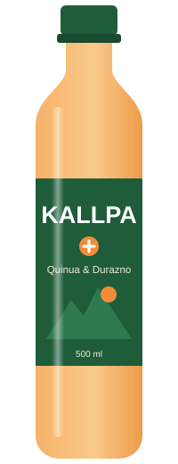

Quinua
Aporta proteína vegetal y textura. Se lava para retirar la saponina y se cocina antes de licuarse.
Bebida nutritiva y funcional · 500 ml
KALLPA+ Quinua & Durazno combina granos andinos y fruta peruana, con maca y kiwicha, en una bebida pasteurizada y sin estimulantes artificiales.

KALLPA significa fuerza en quechua. Elaboramos cada lote en nuestra planta del Parque Industrial de Villa El Salvador, con controles de calidad en cada etapa.
Aporta proteína vegetal y textura. Se lava para retirar la saponina y se cocina antes de licuarse.
Pulpa de durazno peruano (25 %): sabor y color naturales, sin saborizantes artificiales.
Raíz altoandina que complementa la propuesta de energía natural.
Grano andino que suma aporte nutricional a la mezcla.
Compramos a productores y cooperativas del Perú. Así sabemos de dónde viene cada ingrediente y apoyamos a la agricultura local.
Cooperativa de productores del altiplano.
Asociación de productores, con pulpa congelada como respaldo fuera de temporada.
Maca gelatinizada en polvo.
Harina de kiwicha de origen andino.
Escribe el código de lote que aparece en la etiqueta (por ejemplo, KP-261201-01) y conoce su origen y sus controles de calidad.
El resultado de la consulta aparecerá aquí.
Valores por 100 ml y por botella de 500 ml.
Ingredientes: agua tratada, pulpa de durazno (25 %), quinua (3,5 %), azúcar rubia, kiwicha, maca, acidulante (ácido cítrico), estabilizante (carboximetilcelulosa), conservante (sorbato de potasio) y edulcorante (glucósidos de esteviol).
| Nutriente | 100 ml | 500 ml |
|---|---|---|
| Energía | 35 kcal | 175 kcal |
| Grasa total | 0,2 g | 1,2 g |
| Carbohidratos | 7,4 g | 37 g |
| Azúcares totales | 4,1 g | 20,5 g |
| Proteína | 0,8 g | 4,2 g |
| Sodio | 5 mg | 25 mg |
Usamos botellas con contenido reciclado, según la Ley N.° 30884. Después de beberla, recíclala.
La cáscara y el hueso del durazno se destinan a compostaje con productores aliados.
El agua de lavado pasa por trampa de sólidos y control de pH, y el agua de enfriamiento se recircula.
Minimarkets y supermercados de Lima, venta directa, suscripción y pedidos para empresas, gimnasios y universidades.